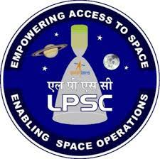

Liquid Propulsion Systems Centre (LPSC) is the centre for design, development and realisation of liquid propulsion stages for ISRO's Launch Vehicles. Development of fluid control valves, transducers, propellant management devices for vacuum conditions and other key components of liquid propulsion systems are also under the purview of this centre. LPSC activities and facilities are spread across its two campuses namely, LPSC, Valiamala, Thriruvananthapuram and LPSC, Bengaluru, Karnataka.